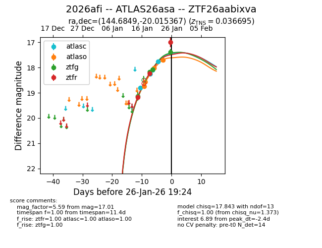
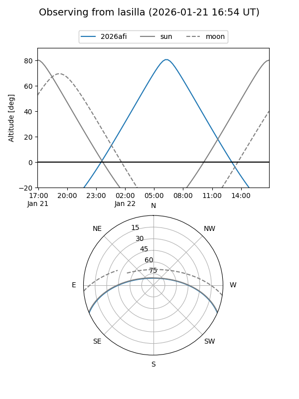
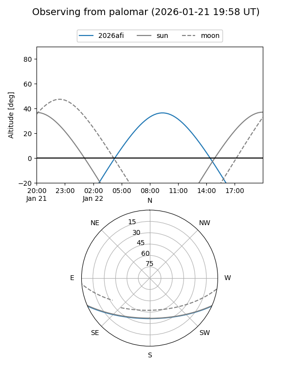
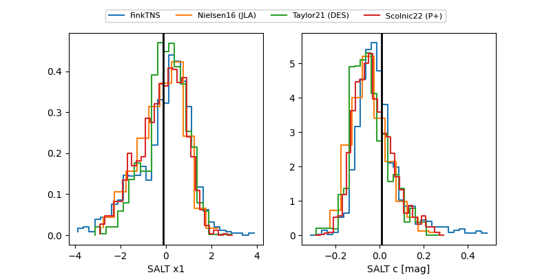

2026afi
Target 2026afi at 2026-01-28 02:56
Aliases and brokers:
FINK: link
Lasair: link
ALeRCE: link
TNS: link
YSE: link
alt names
ZTF26aabixva (ztf,fink_ztf)
2026afi (tns,yse)
ATLAS26asa (atlas)
Coordinates:
equatorial (ra, dec) = 144.6849,-20.01537
equatorial (HMS+DMS) = 09:38:44.37,-20:00:55.32
galactic (l, b) = (253.0669,+23.67716)
Flags:
confirmed ia
Photometry:
last atlasc=17.77, atlaso=17.66, ztfg=17.39, ztfr=17.01
4 atlasc, 4 atlaso, 3 ztfg, 3 ztfr detections
Lightcurve

Visibility


Additional plots
